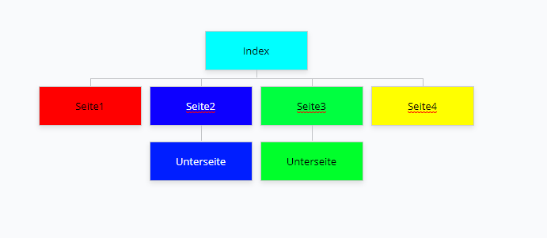

ÜK 404
Design
Screendesign
Ein Screendesign erstellt man um das Layout der noch nicht erstellten Website zu gestalten. Man kann das Screendesign mit vielen verschiedenen Programmen herstellen. In diesem ÜK haben wir mit Adobe XD gearbeitet. Mit Adobe XD kann man schöne und gute Screendesigns herstellen und es ist sehr gut dafür geeignet. Das Screendesign ist so gemacht, dass man die verschiedenen Farben des Footer sehen kann, sowie das Layout der ganzen Seite und auch die Farben des Footers. Das Ziel es ein Screendesign zu erstellen und die Webseite möglichst Wahrheitsgetreu nachzumachen. Natürlich kann das Screendesign während der Bearbeitung der Website angepasst werden. Jedoch sollte es schon möglichst genau sein, damit man es zum Beispiel dem Kunden zeigen kann. Dieser kann dir dann ein Feedback geben. Wenn er nicht zufrieden wäre, müsste man das ganze Websitedesign wieder neu machen.
Sitemap
Ein wichtiger Schritt beim Erstellen einer Webseite ist die Sitemap. Sie zeigt auf, welche Unterseiten in welcher Reihenfolge angeordnet sind. Sie beginnt mit der Startseite unter welcher die Unterseiten aufgeschrieben werden. Eine Sitemap ist sehr wichtig für die Übersicht der Webseite. Sitemaps können zb. auf der Seite GlooMaps erstellt werden. www.gloomaps.com
Wordpress
WordPress ist ein freies Content-Management-System. Es wurde ab 2003 als Software für Weblogs programmiert und
wird als Open-Source-Projekt ständig weiterentwickelt.
WordPress ist das am weitesten verbreitete System zum Betrieb von Webseiten. In WordPress kann jeder Beitrag
frei erstellbaren Kategorien zugewiesen werden, Navigationselemente werden automatisch passend erzeugt.
Weiter bietet das System Leserkomentare mit der Möglichkeit, diese vor der Veröffentlichung erst zu prüfen,
eine Verwaltung der Benutzerrollen und -rechte und die Möglichkeit externer Plug-ins,
womit WordPress in Richtung eines vollwertigen CMS ausgebaut werden kann.
WordPress basiert auf der Skriptsprache PHP und benötigt eine MySQL Datenbank.
CMS
Ein Content-Management-System ist eine Software zur gemeinschaftlichen Erstellung, Bearbeitung, Organistation und Darstellung von digitalen Inhalten zumeist zur Verwendung in Webseiten, aber auch in anderen Medienformen. Diese Ingalte können aus Text- und Multimedia-Dokumenten bestehen. Ein Autor mit entsprechenden Zugriffsrechten kann ein solches System in vielen Fällen ohne oder mit wenig Programmier- oder HTML-Kenntnissen bedienen, da die Mehrzahl der Systeme über eine grafische Benutzeroberfäche verfügt.
Theme
PHP
MySQL
Plugins
Generell versteht man unter dem Begriff Plugin eine Erweiterung für ein Software-Programm, womit dieses zusätzliche Funktionen erhält. Aber meistens wird heutzutage mit "Plugin" ein WordPress-Plugin, also eine Erweiterung oder ein Modul für die Blogsoftware WordPress bezeichnet.
Im Plugin-Verzeichnis von WordPress gibt es tausende von Plugins welche zum Download bereit stehen.
Hier sind die wichtigsten Plugins nochmal aufgelistet:
| Plugin | Funktion |
|---|---|
| Contact Form 7 | Kontakformulare erstellen |
| Yoast SEO | Optimiert Webseiten für Suchmaschinen |
| WP Globus | Plugin zur Hilfe der Webseitenübersetzung in anderen Sprachen |
| Elementor | Plugin zur Hilfe des designen der Webseite |
| WPS Hide login | ändert die Login URL zum Schutz gegen Hacker |
Benutzerrollen
Backup and Restore